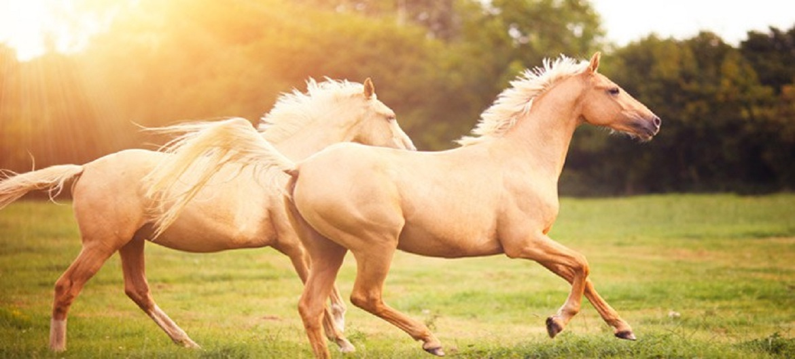

Cool facts about horses
- Horses can sleep both lying down and standing up.
- Horses can run shortly after birth.
- Domestic horses have a lifespan of around 25 years.
- A 19th century horse named 'Old Billy' is said to have lived 62 years.
- Horses have around 205 bones in their skeleton.